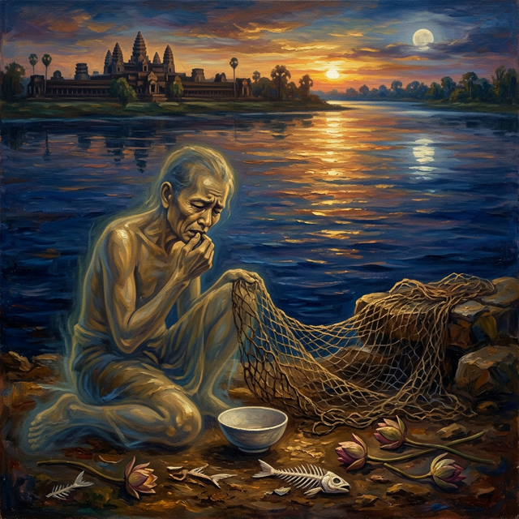
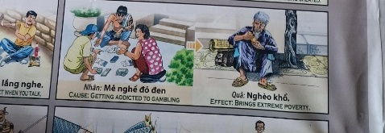

La Red VacíaThe Empty NetLa Rete Vuota空网الشبكة الفارغةПустая сетьDas Leere NetzLe Filet Vide空の網A Rede VaziaLưới Trống
Quien saquea sin medida las aguas del río siembra hambre y engaño en su propia boca. Whoever plunders the river waters without measure sows hunger and deceit in their own mouth. Kẻ cướp bóc nước sông không biết chừng mực gieo đói khát và lừa dối vào chính miệng mình. Wer die Flusswasser maßlos plündert, sät Hunger und Betrug in den eigenen Mund. Кто безмерно грабит воды реки, сеет голод и обман в собственных устах. Celui qui pille sans mesure les eaux du fleuve sème faim et tromperie dans sa propre bouche. Chi saccheggia senza misura le acque del fiume semina fame e inganno nella propria bocca. Quem saqueia sem medida as águas do rio semeia fome e engano na própria boca. 川の水を際限なく奪い尽くす者は、自らの口に飢えと欺きを播く。 无度掠夺河水者，在自己口中播下饥饿与欺骗的种子。 من ينهب مياه النهر بلا حدود يزرع الجوع والخداع في فمه.
Entre las transgresiones que el libro celeste registra con especial gravedad se encuentra la pesca excesiva y la explotación desmedida de los ríos y mares. Quien arranca de las aguas más de lo que necesita para vivir, quien vacía los estanques con redes insaciables sin dejar sustento para las criaturas que vendrán después, está rompiendo el pacto sagrado que une al hombre con la naturaleza que lo alimenta...
Cada pez arrancado del agua más allá de la necesidad legítima, cada red tendida con la avaricia como único motor, cada ecosistema acuático devastado por la codicia sin freno, deja una marca indeleble en el registro cósmico del alma. La deuda se acumula como agua turbia que un día desbordará.
La ley universal dicta con severidad incontestable que quien saquea los ríos y mares sin compasión por las generaciones futuras renacerá con la boca lacerada por llagas, sufriendo hambre crónica y siendo víctima constante del engaño, experimentando en su propio cuerpo la escasez que impuso a las aguas que saqueó.
Among the transgressions that the celestial book records with particular gravity is excessive fishing and the immoderate exploitation of rivers and seas. Whoever tears from the waters more than is needed to live, whoever empties ponds with insatiable nets leaving no sustenance for the creatures that will come after, is breaking the sacred pact that binds humanity to the nature that feeds it...
Every fish torn from the water beyond legitimate need, every net cast with greed as its only engine, every aquatic ecosystem devastated by unbridled avarice, leaves an indelible mark on the cosmic record of the soul. The debt accumulates like murky water that will one day overflow.
Universal law dictates with incontestable severity that whoever plunders rivers and seas without compassion for future generations will be reborn with a mouth lacerated by sores, suffering chronic hunger and being a constant victim of deception, experiencing in their own body the scarcity they imposed upon the waters they plundered.
Tra le trasgressioni che il libro celeste registra con particolare gravità vi è la pesca eccessiva e lo sfruttamento smisurato di fiumi e mari. Chi strappa dalle acque più di quanto necessario per vivere, chi svuota gli stagni con reti insaziabili senza lasciare sostentamento per le creature che verranno dopo, sta rompendo il patto sacro che lega l'uomo alla natura che lo nutre...
Ogni pesce strappato dall'acqua oltre il legittimo bisogno, ogni rete gettata con l'avidità come unico motore, ogni ecosistema acquatico devastato dalla cupidigia sfrenata, lascia un segno indelebile nel registro cosmico dell'anima. Il debito si accumula come acqua torbida che un giorno strariperà.
La legge universale detta con severità incontestabile che chi saccheggia fiumi e mari senza compassione per le generazioni future rinascerà con la bocca lacerata da piaghe, soffrendo fame cronica e cadendo costantemente vittima dell'inganno, sperimentando nel proprio corpo la scarsità che impose alle acque che depredò.
在天书记录的诸多罪过中，过度捕鱼和对江河湖海的无度掠夺占据着特别严重的位置。凡从水中攫取超出生存所需者，凡以贪婪之网掏空池塘而不为后来的生灵留下食粮者，都在打破人与养育他的自然之间的神圣契约……
每一条在合理需求之外被从水中夺走的鱼，每一张以贪欲为唯一驱动而撒下的网，每一个被肆无忌惮的贪婪所摧毁的水生生态系统，都在灵魂的宇宙记录上留下不可磨灭的印记。债务如浊水般积聚，终有一天将溢出堤岸。
宇宙法则以无可争辩的严厉规定：凡是对后代毫无怜悯地掠夺江河大海者，来世必将口腔溃烂、长期忍受饥饿、不断遭受欺骗，在自己的身体上体验他曾强加给所掠夺之水域的匮乏。
من بين المعاصي التي يسجلها الكتاب السماوي بخطورة خاصة الصيد المفرط والاستغلال المفرط للأنهار والبحار. من ينتزع من المياه أكثر مما يحتاج للعيش، ومن يُفرغ البرك بشباك نهمة دون أن يترك قوتاً للمخلوقات التي ستأتي بعده، فإنه يكسر العهد المقدس الذي يربط الإنسان بالطبيعة التي تُطعمه...
كل سمكة تُنتزع من الماء فوق الحاجة المشروعة، وكل شبكة تُلقى بالجشع محركاً وحيداً، وكل نظام بيئي مائي يُدمر بالطمع الجامح، يترك علامة لا تُمحى في السجل الكوني للروح. يتراكم الدَّيْن كماء عكر سيفيض يوماً ما.
يقضي القانون الكوني بصرامة لا جدال فيها أن من ينهب الأنهار والبحار دون رحمة بالأجيال القادمة سيولد من جديد بفم ممزق بالقروح، يعاني من جوع مزمن ويكون ضحية دائمة للخداع، يختبر في جسده الندرة التي فرضها على المياه التي نهبها.
Среди проступков, которые небесная книга фиксирует с особой тяжестью, — чрезмерный лов рыбы и безмерная эксплуатация рек и морей. Кто вырывает из вод больше, чем нужно для жизни, кто опустошает пруды ненасытными сетями, не оставляя пропитания существам, которые придут после, — тот нарушает священный договор, связывающий человека с природой, которая его кормит...
Каждая рыба, вырванная из воды сверх законной потребности, каждая сеть, заброшенная с алчностью как единственным двигателем, каждая водная экосистема, опустошённая безудержной жадностью, оставляет неизгладимый след в космическом реестре души. Долг накапливается, как мутная вода, которая однажды выйдет из берегов.
Вселенский закон диктует с неоспоримой суровостью: кто грабит реки и моря без сострадания к будущим поколениям, переродится с ртом, изъязвлённым язвами, страдая от хронического голода и постоянно становясь жертвой обмана, испытывая на собственном теле дефицит, который навязал ограбленным водам.
Unter den Vergehen, die das himmlische Buch mit besonderer Schwere verzeichnet, steht die übermäßige Fischerei und die maßlose Ausbeutung von Flüssen und Meeren. Wer den Gewässern mehr entreißt als zum Leben nötig, wer Teiche mit unersättlichen Netzen leert, ohne den Geschöpfen, die danach kommen, Nahrung zu hinterlassen, bricht den heiligen Pakt, der den Menschen mit der Natur verbindet, die ihn ernährt...
Jeder Fisch, der über den berechtigten Bedarf hinaus dem Wasser entrissen wird, jedes Netz, das nur von Gier getrieben ausgeworfen wird, jedes aquatische Ökosystem, das von zügellosem Geiz verwüstet wird, hinterlässt ein unauslöschliches Zeichen im kosmischen Register der Seele. Die Schuld sammelt sich wie trübes Wasser, das eines Tages über die Ufer treten wird.
Das universelle Gesetz verfügt mit unbestreitbarer Strenge, dass wer Flüsse und Meere ohne Mitgefühl für künftige Generationen plündert, mit einem von Geschwüren zerfressenen Mund wiedergeboren wird, unter chronischem Hunger leidet und ständig Opfer von Betrug wird, am eigenen Leib den Mangel erfahrend, den er den geplünderten Gewässern auferlegt hat.
Parmi les transgressions que le livre céleste enregistre avec une gravité particulière figure la pêche excessive et l'exploitation démesurée des rivières et des mers. Quiconque arrache aux eaux plus qu'il ne faut pour vivre, quiconque vide les étangs avec des filets insatiables sans laisser de subsistance aux créatures qui viendront après, brise le pacte sacré qui lie l'homme à la nature qui le nourrit...
Chaque poisson arraché à l'eau au-delà du besoin légitime, chaque filet jeté avec l'avidité pour seul moteur, chaque écosystème aquatique dévasté par la cupidité effrénée, laisse une marque indélébile dans le registre cosmique de l'âme. La dette s'accumule comme une eau trouble qui débordera un jour.
La loi universelle dicte avec une sévérité incontestable que quiconque pille rivières et mers sans compassion pour les générations futures renaîtra la bouche lacérée par des plaies, souffrant de faim chronique et victime constante de tromperie, éprouvant dans son propre corps la pénurie qu'il imposa aux eaux qu'il pilla.
天上の書が特に重大な罪として記録するものの中に、過度の漁獲と川や海の無節制な搾取があります。生きるために必要な以上を水から奪い取る者、飽くなき網で池を空にし後に来る生き物に糧を残さない者は、人を養う自然と人を結ぶ神聖な契約を破っているのです……
正当な必要を超えて水から引き抜かれた魚の一匹一匹、貪欲だけを原動力として投げられた網の一つ一つ、歯止めなき強欲に荒廃させられた水生生態系の一つ一つが、魂の宇宙的記録に消えない印を残します。負債はいつか溢れ出す濁った水のように積み重なります。
宇宙の法則は議論の余地なき厳格さで定めています：未来の世代への慈悲なく川や海を略奪する者は、口を潰瘍に引き裂かれ、慢性的な飢えに苦しみ、絶えず欺かれる被害者として生まれ変わり、自らが略奪した水域に課した欠乏を自分の体で体験するのだと。
Entre as transgressões que o livro celeste registra com gravidade especial encontra-se a pesca excessiva e a exploração desmedida dos rios e mares. Quem arranca das águas mais do que precisa para viver, quem esvazia os tanques com redes insaciáveis sem deixar sustento para as criaturas que virão depois, está quebrando o pacto sagrado que une o homem à natureza que o alimenta...
Cada peixe arrancado da água além da necessidade legítima, cada rede lançada tendo a ganância como único motor, cada ecossistema aquático devastado pela cobiça desenfreada, deixa uma marca indelével no registro cósmico da alma. A dívida se acumula como água turva que um dia transbordará.
A lei universal dita com severidade incontestável que quem saqueia rios e mares sem compaixão pelas gerações futuras renascerá com a boca lacerada por chagas, sofrendo fome crônica e sendo vítima constante de engano, experimentando no próprio corpo a escassez que impôs às águas que saqueou.
Trong số các tội lỗi mà cuốn sách thiên thượng ghi nhận với mức độ nghiêm trọng đặc biệt có việc đánh bắt cá quá mức và khai thác vô độ sông ngòi biển cả. Kẻ nào vơ vét từ mặt nước nhiều hơn mức cần để sống, kẻ nào vét cạn ao hồ bằng những tấm lưới tham lam không chừa lại thức ăn cho muôn loài đến sau, kẻ đó đang phá vỡ giao ước thiêng liêng gắn kết con người với thiên nhiên nuôi dưỡng mình...
Mỗi con cá bị giật khỏi nước vượt quá nhu cầu chính đáng, mỗi tấm lưới quăng ra với lòng tham là động cơ duy nhất, mỗi hệ sinh thái thủy sinh bị tàn phá bởi sự tham lam vô độ, đều để lại dấu ấn không thể xóa nhòa trong hồ sơ vũ trụ của linh hồn. Món nợ tích tụ như nước đục sẽ có ngày tràn bờ.
Luật phổ quát quy định với sự nghiêm khắc không thể phản bác rằng kẻ nào cướp bóc sông biển mà không thương xót các thế hệ tương lai sẽ tái sinh với miệng lở loét đau đớn, chịu đựng đói triền miên và liên tục bị lừa gạt, trải nghiệm trên chính thân xác mình sự khan hiếm mà kẻ đó đã áp đặt lên vùng nước bị cướp phá.
El Pescador Insaciable
The Insatiable Fisherman
Il Pescatore Insaziabile
贪得无厌的渔夫
الصياد النهم
Ненасытный рыбак
Der Unersättliche Fischer
Le Pêcheur Insatiable
飽くなき漁師
O Pescador Insaciável
Ngư Dân Tham Lam
En un delta fértil donde tres ríos confluían, vivía un pescador llamado Khanh cuya habilidad con las redes no tenía rival. Pero Khanh no pescaba para alimentar a su familia: pescaba para dominar. Tendía trampas desde el amanecer hasta la medianoche, arrasando bancos enteros de peces que luego dejaba pudrir al sol porque no podía vender ni consumir semejante abundancia...
Los ancianos del delta le suplicaban moderación: "Deja algo para que los peces se reproduzcan, deja algo para quienes vendrán después de ti." Pero Khanh se reía de sus advertencias, convencido de que el río era inagotable y que su dominio sobre las aguas era un derecho ganado por su destreza.
En su siguiente existencia, Khanh nació con una boca frágil plagada de llagas que le impedían comer sin dolor. Rodeado de abundante comida que no podía tragar, era además engañado constantemente por quienes prometían curarle. Miraba el río —ahora rebosante de peces que no podía saborear— y comprendía, entre lágrimas silenciosas, que cada bocado que le fue negado era un eco exacto de cada pez que él había arrebatado al agua sin necesidad.
In a fertile delta where three rivers converged, there lived a fisherman named Khanh whose skill with nets was unrivaled. But Khanh did not fish to feed his family: he fished to dominate. He set traps from dawn until midnight, devastating entire schools of fish that he then left to rot in the sun because he could neither sell nor consume such abundance...
The delta elders begged him for moderation: "Leave something so the fish can reproduce, leave something for those who will come after you." But Khanh laughed at their warnings, convinced the river was inexhaustible and that his dominion over the waters was a right earned by his skill.
In his next existence, Khanh was born with a fragile mouth plagued by sores that prevented him from eating without pain. Surrounded by abundant food he could not swallow, he was also constantly deceived by those who promised to cure him. He watched the river — now teeming with fish he could not taste — and understood, between silent tears, that every morsel denied him was an exact echo of every fish he had torn from the water without need.
In un delta fertile dove tre fiumi confluivano, viveva un pescatore di nome Khanh la cui abilità con le reti non aveva rivali. Ma Khanh non pescava per sfamare la famiglia: pescava per dominare. Tendeva trappole dall'alba fino a mezzanotte, devastando interi banchi di pesci che poi lasciava marcire al sole perché non poteva né vendere né consumare tanta abbondanza...
Gli anziani del delta lo supplicavano di moderarsi: "Lascia qualcosa affinché i pesci si riproducano, lascia qualcosa per chi verrà dopo di te." Ma Khanh rideva dei loro avvertimenti, convinto che il fiume fosse inesauribile e che il suo dominio sulle acque fosse un diritto guadagnato dalla sua destrezza.
Nella sua esistenza successiva, Khanh nacque con una bocca fragile piagata da ulcere che gli impedivano di mangiare senza dolore. Circondato da cibo abbondante che non poteva inghiottire, era inoltre costantemente ingannato da chi prometteva di guarirlo. Guardava il fiume — ora traboccante di pesci che non poteva assaporare — e comprendeva, tra lacrime silenziose, che ogni boccone negatogli era un eco esatto di ogni pesce che aveva strappato all'acqua senza necessità.
在三条河流交汇的肥沃三角洲，住着一个名叫康的渔夫，他撒网的技艺无人能敌。但康捕鱼不是为了养活家人：他捕鱼是为了征服。从黎明到午夜他布下陷阱，将整群鱼一网打尽，然后任其在阳光下腐烂，因为他既卖不完也吃不完如此多的鱼获……
三角洲的长者们恳求他节制："留些鱼让它们繁殖吧，给后来的人留一些。"但康嘲笑他们的忠告，坚信河流是取之不尽的，而他对水域的统治是凭本事赢得的权利。
来世，康的嘴巴长满了脆弱的溃疡，让他无法无痛地进食。被丰盛的食物包围却吞咽不下，还不断被那些许诺治愈他的人欺骗。他望着河流——如今鱼群丰盈他却无法品尝——在无声的泪水中理解了：被拒绝的每一口食物，正是他曾无需而从水中夺走的每一条鱼的精确回响。
في دلتا خصبة حيث تلتقي ثلاثة أنهار، عاش صياد يُدعى خانه لم يكن لمهارته في الشباك مثيل. لكن خانه لم يكن يصطاد لإطعام عائلته: كان يصطاد للسيطرة. كان ينصب الفخاخ من الفجر حتى منتصف الليل، يدمر أسراباً كاملة من الأسماك ثم يتركها تتعفن تحت الشمس لأنه لا يستطيع بيع ولا استهلاك كل تلك الوفرة...
توسل إليه شيوخ الدلتا بالاعتدال: "اترك شيئاً كي تتكاثر الأسماك، اترك شيئاً لمن سيأتي بعدك." لكن خانه ضحك من تحذيراتهم، مقتنعاً بأن النهر لا ينضب وأن سيطرته على المياه حق اكتسبه بمهارته.
في وجوده التالي، وُلد خانه بفم هش مليء بالقروح التي تمنعه من الأكل دون ألم. محاطاً بطعام وفير لا يستطيع ابتلاعه، كان أيضاً يُخدع باستمرار ممن يعدون بشفائه. كان ينظر إلى النهر — المليء الآن بالأسماك التي لا يستطيع تذوقها — ويفهم، بين دموع صامتة، أن كل لقمة حُرم منها كانت صدى دقيقاً لكل سمكة انتزعها من الماء دون حاجة.
В плодородной дельте, где сходились три реки, жил рыбак по имени Кхань, чьё мастерство с сетями было непревзойдённым. Но Кхань рыбачил не для того, чтобы кормить семью: он рыбачил, чтобы властвовать. С рассвета до полуночи он расставлял ловушки, опустошая целые косяки рыб, которые затем оставлял гнить на солнце, ибо не мог ни продать, ни потребить такое изобилие...
Старейшины дельты умоляли его о сдержанности: «Оставь что-нибудь, чтобы рыба могла размножиться, оставь что-нибудь для тех, кто придёт после тебя». Но Кхань смеялся над их предостережениями, убеждённый, что река неисчерпаема, а его владычество над водами — право, заслуженное мастерством.
В следующем существовании Кхань родился с хрупким ртом, изъязвлённым язвами, которые не давали есть без боли. Окружённый обильной пищей, которую не мог проглотить, он к тому же постоянно был обманут теми, кто обещал его исцелить. Он смотрел на реку — теперь кишащую рыбой, которую не мог попробовать — и понимал, сквозь беззвучные слёзы, что каждый кусок, в котором ему было отказано, был точным эхом каждой рыбы, которую он вырвал из воды без надобности.
In einem fruchtbaren Delta, wo drei Flüsse zusammenflossen, lebte ein Fischer namens Khanh, dessen Geschick mit den Netzen seinesgleichen suchte. Doch Khanh fischte nicht, um seine Familie zu ernähren: Er fischte, um zu herrschen. Von der Morgendämmerung bis Mitternacht stellte er Fallen auf, verwüstete ganze Fischschwärme, die er dann in der Sonne verrotten ließ, weil er solchen Überfluss weder verkaufen noch verzehren konnte...
Die Ältesten des Deltas flehten ihn um Mäßigung an: „Lass etwas übrig, damit sich die Fische vermehren können, lass etwas für die, die nach dir kommen werden." Doch Khanh lachte über ihre Warnungen, überzeugt, der Fluss sei unerschöpflich und seine Herrschaft über die Gewässer ein durch sein Geschick erworbenes Recht.
In seiner nächsten Existenz wurde Khanh mit einem fragilen, von Geschwüren geplagten Mund geboren, die ihn am schmerzfreien Essen hinderten. Umgeben von reichlichem Essen, das er nicht schlucken konnte, wurde er zudem ständig von denen betrogen, die versprachen, ihn zu heilen. Er beobachtete den Fluss — nun wimmelnd vor Fischen, die er nicht kosten konnte — und verstand unter stillen Tränen, dass jeder ihm verweigerte Bissen ein exaktes Echo jedes Fisches war, den er ohne Not dem Wasser entrissen hatte.
Dans un delta fertile où trois rivières confluaient, vivait un pêcheur nommé Khanh dont l'habileté avec les filets n'avait pas de rival. Mais Khanh ne pêchait pas pour nourrir sa famille : il pêchait pour dominer. Il tendait des pièges de l'aube jusqu'à minuit, dévastant des bancs entiers de poissons qu'il laissait ensuite pourrir au soleil car il ne pouvait ni vendre ni consommer une telle abondance...
Les anciens du delta le suppliaient de faire preuve de modération : « Laisse quelque chose pour que les poissons se reproduisent, laisse quelque chose pour ceux qui viendront après toi. » Mais Khanh riait de leurs avertissements, convaincu que le fleuve était inépuisable et que sa domination sur les eaux était un droit gagné par son adresse.
Dans son existence suivante, Khanh naquit avec une bouche fragile couverte d'ulcères qui l'empêchaient de manger sans douleur. Entouré de nourriture abondante qu'il ne pouvait avaler, il était en outre constamment trompé par ceux qui promettaient de le guérir. Il regardait le fleuve — désormais grouillant de poissons qu'il ne pouvait goûter — et comprenait, entre des larmes silencieuses, que chaque bouchée qui lui était refusée était l'écho exact de chaque poisson qu'il avait arraché à l'eau sans nécessité.
三つの川が合流する肥沃なデルタに、網の技術で並ぶ者のいないカインという漁師が住んでいた。しかしカインは家族を養うために漁をしていたのではなかった――支配するために漁をしていた。夜明けから真夜中まで罠を仕掛け、魚の群れを丸ごと壊滅させ、売ることも消費することもできないほどの量を太陽の下で腐らせた……
デルタの長老たちは節制を懇願した。「魚が繁殖できるように何か残してくれ。お前の後に来る者たちのために何か残してくれ。」しかしカインは彼らの警告を笑い飛ばし、川は尽きることがなく、水域に対する自分の支配は技で勝ち取った権利だと確信していた。
次の存在でカインは、痛みなしに食べることを妨げる潰瘍に悩まされる弱い口を持って生まれた。飲み込めない豊富な食べ物に囲まれ、治すと約束する者たちに絶えず騙された。彼は川を眺めた――今や味わうことのできない魚で溢れている川を――そして静かな涙の間に理解した。拒まれた一口一口が、必要もなく水から引き抜いた魚の一匹一匹の正確な反響だったことを。
Num delta fértil onde três rios convergiam, vivia um pescador chamado Khanh cuja habilidade com as redes não tinha rival. Mas Khanh não pescava para alimentar a família: pescava para dominar. Armava armadilhas do amanhecer à meia-noite, devastando cardumes inteiros de peixes que depois deixava apodrecer ao sol porque não conseguia vender nem consumir tamanha abundância...
Os anciãos do delta suplicavam-lhe moderação: "Deixe algo para que os peixes se reproduzam, deixe algo para quem vier depois de ti." Mas Khanh ria de seus avisos, convencido de que o rio era inesgotável e que seu domínio sobre as águas era um direito conquistado por sua destreza.
Em sua existência seguinte, Khanh nasceu com uma boca frágil repleta de chagas que o impediam de comer sem dor. Rodeado de comida abundante que não conseguia engolir, era além disso constantemente enganado por quem prometia curá-lo. Olhava o rio — agora transbordante de peixes que não podia saborear — e compreendia, entre lágrimas silenciosas, que cada bocado que lhe foi negado era um eco exato de cada peixe que arrancara da água sem necessidade.
Trong một vùng châu thổ màu mỡ nơi ba con sông hội tụ, có một ngư dân tên Khánh với tay nghề giăng lưới không ai sánh bằng. Nhưng Khánh không đánh cá để nuôi gia đình: anh ta đánh cá để thống trị. Từ bình minh đến nửa đêm anh ta giăng bẫy, tàn phá từng đàn cá rồi để chúng thối rữa dưới nắng vì không thể bán hết cũng không thể ăn hết sự dư thừa ấy...
Các bô lão trong vùng van nài anh ta tiết chế: "Hãy để lại cho cá sinh sản, hãy để lại cho những người đến sau con." Nhưng Khánh cười nhạo những lời cảnh báo của họ, tin rằng dòng sông là vô tận và quyền thống trị vùng nước là thứ anh ta kiếm được bằng tài nghệ.
Kiếp sau, Khánh sinh ra với cái miệng yếu ớt đầy lở loét khiến anh không thể ăn mà không đau đớn. Được bao quanh bởi thức ăn dồi dào mà không thể nuốt, anh còn liên tục bị lừa gạt bởi những kẻ hứa chữa lành cho mình. Anh nhìn dòng sông — giờ tràn ngập cá mà anh không thể nếm — và hiểu ra, giữa những giọt nước mắt thầm lặng, rằng mỗi miếng ăn bị từ chối là tiếng vọng chính xác của mỗi con cá anh đã giằng khỏi mặt nước mà không cần đến.

La Inspiración Original
The Original Inspiration
L'Ispirazione Originale
最初的灵感
الإلهام الأصلي
Оригинальное вдохновение
Die Ursprüngliche Inspiration
L'Inspiration Originale
元のインスピレーション
A Inspiração Original
Nguồn Cảm Hứng Nguyên Bản
La historia que hemos relatado en este capítulo está inspirada por el pasaje de la escena original de los murales «Tranh Nhân Quả» (Ilustraciones del Karma) del Templo Linh Ung en Da Nang, capturado en la imagen.
La storia che abbiamo raccontato in questo capitolo è ispirata al passaggio della scena originale dei murali “Tranh Nhân Quả” (Illustrazioni del Karma) del Tempio Linh Ung a Da Nang, catturati nell'immagine.
我们在本章中讲述的故事的灵感来自图像中捕获的岘港灵应寺“Tranh Nhân Quả”（业力插图）壁画的原始场景。
القصة التي رويناها في هذا الفصل مستوحاة من مقطع من المشهد الأصلي لجداريات "ترانه نهان كو" (الرسوم التوضيحية للكارما) لمعبد لينه أونغ في دا نانغ، الملتقطة في الصورة.
История, которую мы рассказали в этой главе, вдохновлена отрывком из оригинальной сцены фрески «Тран Нхан Ку» («Иллюстрации кармы») храма Линь Унг в Дананге, запечатленной на изображении.
Die Geschichte, die wir in diesem Kapitel erzählt haben, ist inspiriert von der Passage aus der Originalszene der Wandgemälde „Tranh Nhân Quả“ (Illustrationen von Karma) des Linh Ung-Tempels in Da Nang, die im Bild festgehalten ist.
L'histoire que nous avons racontée dans ce chapitre est inspirée du passage de la scène originale des peintures murales « Tranh Nhân Quả » (Illustrations du Karma) du temple Linh Ung à Da Nang, capturées dans l'image.
この章で私たちが語った物語は、ダナンのリンウン寺院の壁画「Tranh Nhân Quả」（カルマの図）の元のシーンの一節からインスピレーションを得て、画像に収められています。
A história que contamos neste capítulo é inspirada na passagem da cena original dos murais “Tranh Nhân Quả” (Ilustrações do Karma) do Templo Linh Ung em Da Nang, capturada na imagem.
Câu chuyện mà chúng tôi đã kể trong chương này được lấy cảm hứng từ đoạn trích từ bối cảnh nguyên bản của bức bích họa «Tranh Nhân Quả» (Minh họa về Nghiệp) tại Chùa Linh Ứng ở Đà Nẵng, được ghi lại trong hình ảnh.
The story we have related in this chapter is inspired by the passage from the original scene of the "Tranh Nhân Quả" (Karma Illustrations) murals at the Linh Ung Temple in Da Nang, captured in the image.

Como se puede apreciar en el pasaje extraído del mural, la causa y su efecto kármico están descritos originalmente en vietnamita y con una breve traducción al inglés. A continuación, te ofrecemos su traducción detallada en los distintos idiomas:
As can be seen in the passage extracted from the mural, the cause and its karmic effect are originally described in Vietnamese with a brief English translation. Below, we offer the detailed translation in different languages:
Come si può vedere nel passaggio estratto dal murale, la causa e il suo effetto karmico sono originariamente descritti in vietnamita con una breve traduzione in inglese. Di seguito offriamo la traduzione dettagliata in diverse lingue:
As can be seen in the passage taken from the mural, the cause and its karmic effect are originally described in Vietnamese and with a brief translation into English.下面，我们为您提供不同语言的详细翻译：
وكما يتبين من المقطع المأخوذ من اللوحة الجدارية، فإن السبب وتأثيره الكارمي موصوفان في الأصل باللغة الفيتنامية مع ترجمة مختصرة إلى الإنجليزية. ونقدم لكم أدناه ترجمتها التفصيلية باللغات المختلفة:
Как видно из отрывка, взятого из фрески, причина и ее кармическое следствие изначально описаны на вьетнамском языке и с кратким переводом на английский язык. Ниже мы предлагаем вам его подробный перевод на разные языки:
Wie aus der Passage aus dem Wandgemälde hervorgeht, werden die Ursache und ihre karmische Wirkung ursprünglich auf Vietnamesisch und mit einer kurzen Übersetzung ins Englische beschrieben. Nachfolgend bieten wir Ihnen die ausführliche Übersetzung in die verschiedenen Sprachen an:
Comme on peut le voir dans le passage tiré de la peinture murale, la cause et son effet karmique sont initialement décrits en vietnamien et avec une brève traduction en anglais. Ci-dessous, nous vous proposons sa traduction détaillée dans les différentes langues :
壁画の一節からわかるように、原因とそのカルマ的影響はもともとベトナム語で説明されており、英語への簡単な翻訳が付けられています。以下に、さまざまな言語での詳細な翻訳を提供します。
Como pode ser visto no trecho retirado do mural, a causa e seu efeito cármico são originalmente descritos em vietnamita e com uma breve tradução para o inglês. Abaixo, oferecemos sua tradução detalhada nos diferentes idiomas:
Như có thể thấy trong đoạn trích từ bức bích họa, nguyên nhân và quả báo của nó ban đầu được mô tả bằng tiếng Việt và có bản dịch tiếng Anh ngắn gọn. Dưới đây, chúng tôi cung cấp bản dịch chi tiết của nó sang các ngôn ngữ khác nhau:
🇻🇳 Tiếng Việt:
Nhân: Kiếp trước hay câu cá.
Quả: Kiếp sau hay bị đói lừa và bị lỡ miệng.
🇬🇧 English Translation:
Cause: Overfishing in the previous life.
Effect: Brings mouth sores, hunger and deception.
Traducción Recreada:
Causa: Pescar en exceso, vaciar ríos y mares sin dejar sustento para las generaciones futuras.
Efecto: Renacer con la boca llagada, sufriendo hambre crónica y siendo víctima constante del engaño.
Recreated Translation:
Cause: Excessive fishing, emptying rivers and seas without leaving sustenance for future generations.
Effect: Being reborn with a mouth full of sores, suffering chronic hunger and being constantly deceived.
Traduzione ricreata:
Causa: Pesca eccessiva, svuotare fiumi e mari senza lasciare sostentamento alle generazioni future.
Effetto: Rinascere con la bocca piagata, soffrendo fame cronica e cadendo vittima costante dell'inganno.
重新翻译：
原因：过度捕鱼，掏空江河湖海而不为后代留下食粮。
结果：重生时带有严重的行动障碍和身体限制。
إعادة إنشاء الترجمة:
السبب: الصيد المفرط وإفراغ الأنهار والبحار دون ترك قوت للأجيال القادمة.
التأثير: الولادة من جديد بفم مليء بالقروح، يعاني من جوع مزمن ويتعرض للخداع باستمرار.
Воссозданный перевод:
Причина: Чрезмерный лов рыбы, опустошение рек и морей без оставления пропитания будущим поколениям.
Следствие: Перерождение с изъязвлённым ртом, хроническим голодом и постоянным обманом.
Nachgebildete Übersetzung:
Ursache: Übermäßiger Fischfang, Leeren von Flüssen und Meeren ohne Nahrung für zukünftige Generationen.
Wirkung: Wiedergeburt mit geschwürbeladenem Mund, chronischem Hunger und ständigem Betrug.
Traduction recréée :
Cause : Pêche excessive, vider rivières et mers sans laisser de subsistance aux générations futures.
Effet : Renaître la bouche couverte d'ulcères, souffrant de faim chronique et constamment trompé.
再作成された翻訳:
原因: 過度の漁獲、未来の世代に糧を残さず川や海を空にすること。
結果: 深刻な移動障害と身体的制約を持って生まれ変わること。
Tradução recriada:
Causa: Pesca excessiva, esvaziar rios e mares sem deixar sustento para as gerações futuras.
Efeito: Renascer com a boca cheia de chagas, sofrendo fome crônica e sendo constantemente enganado.
Bản dịch tái hiện:
Nguyên nhân: Đánh bắt quá mức, vét cạn sông biển mà không để lại thức ăn cho các thế hệ tương lai.
Kết quả: Tái sinh với miệng đầy lở loét, chịu đói triền miên và liên tục bị lừa gạt.
Análisis: La exhibición impúdica del cuerpo no es un acto inocente ni meramente estético: constituye, según la ley kármica, una forma de agresión sutil contra la paz interior de quienes contemplan. Al provocar deliberadamente el deseo ajeno, el exhibicionista siembra en el campo cósmico semillas de fuego que inevitablemente germinarán en su propia alma. La retribución es de una simetría perfecta: quien encendió el deseo de otros sin medida, renace consumido por un fuego interno que ninguna relación, ningún placer y ninguna satisfacción pueden apagar. Es la sed del alma que crece cuanto más se bebe.
Analysis: The immodest exhibition of the body is not an innocent or merely aesthetic act: according to karmic law, it constitutes a subtle form of aggression against the inner peace of those who behold it. By deliberately provoking others' desire, the exhibitionist sows in the cosmic field seeds of fire that will inevitably sprout in their own soul. The retribution is of perfect symmetry: whoever ignited others' desire without measure is reborn consumed by an internal fire that no relationship, no pleasure and no satisfaction can extinguish. It is the thirst of the soul that grows the more it drinks.
Analisi: The immodest exhibition of the body is not an innocent or merely aesthetic act: according to karmic law, it constitutes a subtle form of aggression against the inner peace of those who behold it. By deliberately provoking others' desire, the exhibitionist sows in the cosmic field seeds of fire that will inevitably sprout in their own soul. The retribution is of perfect symmetry: whoever ignited others' desire without measure is reborn consumed by an internal fire that no relationship, no pleasure and no satisfaction can extinguish. It is the thirst of the soul that grows the more it drinks.
分析： The immodest exhibition of the body is not an innocent or merely aesthetic act: according to karmic law, it constitutes a subtle form of aggression against the inner peace of those who behold it. By deliberately provoking others' desire, the exhibitionist sows in the cosmic field seeds of fire that will inevitably sprout in their own soul. The retribution is of perfect symmetry: whoever ignited others' desire without measure is reborn consumed by an internal fire that no relationship, no pleasure and no satisfaction can extinguish. It is the thirst of the soul that grows the more it drinks.
التحليل: The immodest exhibition of the body is not an innocent or merely aesthetic act: according to karmic law, it constitutes a subtle form of aggression against the inner peace of those who behold it. By deliberately provoking others' desire, the exhibitionist sows in the cosmic field seeds of fire that will inevitably sprout in their own soul. The retribution is of perfect symmetry: whoever ignited others' desire without measure is reborn consumed by an internal fire that no relationship, no pleasure and no satisfaction can extinguish. It is the thirst of the soul that grows the more it drinks.
Анализ The immodest exhibition of the body is not an innocent or merely aesthetic act: according to karmic law, it constitutes a subtle form of aggression against the inner peace of those who behold it. By deliberately provoking others' desire, the exhibitionist sows in the cosmic field seeds of fire that will inevitably sprout in their own soul. The retribution is of perfect symmetry: whoever ignited others' desire without measure is reborn consumed by an internal fire that no relationship, no pleasure and no satisfaction can extinguish. It is the thirst of the soul that grows the more it drinks.
Analyse: The immodest exhibition of the body is not an innocent or merely aesthetic act: according to karmic law, it constitutes a subtle form of aggression against the inner peace of those who behold it. By deliberately provoking others' desire, the exhibitionist sows in the cosmic field seeds of fire that will inevitably sprout in their own soul. The retribution is of perfect symmetry: whoever ignited others' desire without measure is reborn consumed by an internal fire that no relationship, no pleasure and no satisfaction can extinguish. It is the thirst of the soul that grows the more it drinks.
Analyse : The immodest exhibition of the body is not an innocent or merely aesthetic act: according to karmic law, it constitutes a subtle form of aggression against the inner peace of those who behold it. By deliberately provoking others' desire, the exhibitionist sows in the cosmic field seeds of fire that will inevitably sprout in their own soul. The retribution is of perfect symmetry: whoever ignited others' desire without measure is reborn consumed by an internal fire that no relationship, no pleasure and no satisfaction can extinguish. It is the thirst of the soul that grows the more it drinks.
分析: The immodest exhibition of the body is not an innocent or merely aesthetic act: according to karmic law, it constitutes a subtle form of aggression against the inner peace of those who behold it. By deliberately provoking others' desire, the exhibitionist sows in the cosmic field seeds of fire that will inevitably sprout in their own soul. The retribution is of perfect symmetry: whoever ignited others' desire without measure is reborn consumed by an internal fire that no relationship, no pleasure and no satisfaction can extinguish. It is the thirst of the soul that grows the more it drinks.
Análise: The immodest exhibition of the body is not an innocent or merely aesthetic act: according to karmic law, it constitutes a subtle form of aggression against the inner peace of those who behold it. By deliberately provoking others' desire, the exhibitionist sows in the cosmic field seeds of fire that will inevitably sprout in their own soul. The retribution is of perfect symmetry: whoever ignited others' desire without measure is reborn consumed by an internal fire that no relationship, no pleasure and no satisfaction can extinguish. It is the thirst of the soul that grows the more it drinks.
Phân tích: The immodest exhibition of the body is not an innocent or merely aesthetic act: according to karmic law, it constitutes a subtle form of aggression against the inner peace of those who behold it. By deliberately provoking others' desire, the exhibitionist sows in the cosmic field seeds of fire that will inevitably sprout in their own soul. The retribution is of perfect symmetry: whoever ignited others' desire without measure is reborn consumed by an internal fire that no relationship, no pleasure and no satisfaction can extinguish. It is the thirst of the soul that grows the more it drinks.
Si quieres conocer más sobre el proyecto o colaborar, accede a nuestro Linktree.
If you want to know more about the project or collaborate, access our Linktree.
Se vuoi saperne di più sul progetto o collaborare, accedi al nostro Linktree.
如果您想了解有关该项目或合作的更多信息，请访问我们的 Linktree.
إذا كنت تريد معرفة المزيد عن المشروع أو التعاون، قم بالوصول إلى موقعنا Linktree.
Если вы хотите узнать больше о проекте или сотрудничать, посетите наш Linktree.
Wenn Sie mehr über das Projekt erfahren oder zusammenarbeiten möchten, greifen Sie auf unsere zu Linktree.
Si vous souhaitez en savoir plus sur le projet ou collaborer, accédez à notre Linktree.
プロジェクトについて詳しく知りたい場合、またはコラボレーションしたい場合は、こちらにアクセスしてください。 Linktree.
Se quiser saber mais sobre o projeto ou colaborar, acesse nosso Linktree.
Nếu bạn muốn biết thêm về dự án hoặc hợp tác, hãy truy cập Linktree của chúng tôi.